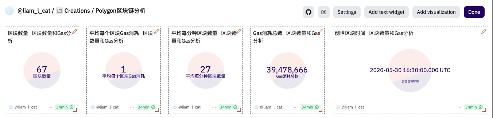
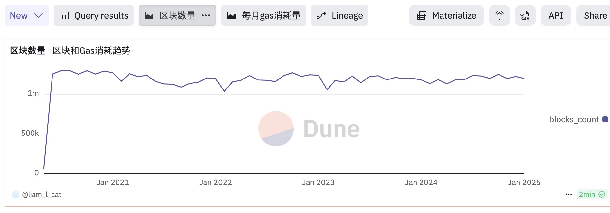
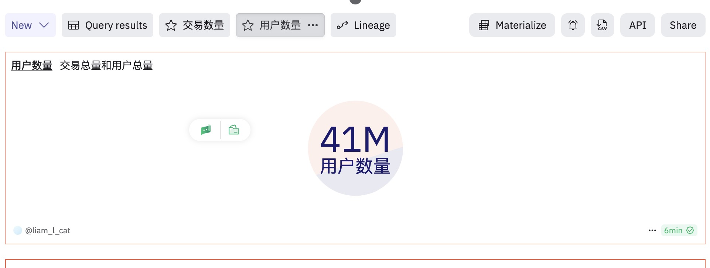

Chapter 5 Polygon区块链概况分析
Polygon 是一个专注于提升以太坊可扩展性的去中心化 Layer 2 解决方案，旨在“将世界带入以太坊”。它通过提供高吞吐量、低交易费用的网络，使开发者能够构建高效、用户友好的去中心化应用（DApp），而无需牺牲安全性。Polygon 采用侧链、Rollups、零知识证明（ZK）等多种扩展技术，确保 Web3 应用能够在更广泛的用户群体中普及，同时保持与以太坊主网的兼容性。
我们的目标是对整个Polygon区块链进行全面的分析以掌握其当前发展状态。分析内容包括：
- 区块分析：总区块数、每分钟出块数量、Gas消耗总量、平均Gas消耗、每日（每月）区块生成数量趋势等
- 交易和用户分析：总交易量、总用户数、每区块交易数量、成功/失败交易对比、每日（每月）交易数量趋势、每日（每月）活跃用户数趋势、每日（每月）每日新用户趋势、新用户与活跃用户对比等
- 原生代币MATIC分析：流通总量、持有者分析、头部持有者、价格走势等
- 智能合约分析：已部署智能合约总量、每日（每月）新合约部署量趋势、最热门智能合约交易量对比和发展趋势分析
5.1 区块分析
5.1.1 区块总数和Gas 总消耗总量
为了全面了解 Polygon 区块链的当前区块总数及其 Gas 消耗情况，我们可以编写一条 SQL 查询，获取以下关键指标：
- 总区块数量（Total Blocks）
- 创世区块的出块时间（Genesis Block Time）
- 平均每分钟新增的区块数（Average Blocks per Minute）
- 总 Gas 消耗量（Total Gas Used）
- 每个区块的平均 Gas 消耗（Average Gas per Block）
该查询能够帮助我们全面评估 Polygon 网络的运行情况，包括出块速率和 Gas 费用使用效率。
select count(*) / 1e6 as blocks_count,
min(time) as min_block_time,
count(*) / ((to_unixtime(Now()) - to_unixtime(min(time))) / 60) as avg_block_per_minute,
sum(gas_used * coalesce(base_fee_per_gas, 1)) / 1e18 as total_gas_used,
avg(gas_used * coalesce(base_fee_per_gas, 1)) / 1e18 as average_gas_used
from polygon.blocks
5.1.2 周期内新区块生成趋势和Gas消耗
我们可以按日期汇总，分别统计每月生成的区块数量和对应的Gas消耗。
with block_daily as (
select date_trunc('day', time) as block_date,
count(*) as blocks_count,
sum(gas_used * coalesce(base_fee_per_gas, 1)) / 1e18 as gas_used
from polygon.blocks
group by 1
)
select block_date,
blocks_count,
gas_used,
avg(blocks_count) over (order by block_date rows between 6 preceding and current row) as ma_7_days_blocks_count,
avg(blocks_count) over (order by block_date rows between 29 preceding and current row) as ma_30_days_blocks_count,
avg(gas_used) over (order by block_date rows between 6 preceding and current row) as ma_7_days_gas_used
from block_daily
order by block_date
5.2 交易和用户分析
5.2.1 交易总量和用户总数( 2024-05 至今)
我们希望统计 Polygon 区块链的总交易次数和独立用户地址数量。为此，我们可以定义一个 CTE（公用表表达式），将交易的发起地址 from_address 和接收地址 to_address 通过 UNION ALL 合并，随后计算唯一地址总数。
在计算过程中，我们 不排除合约地址，但如果需要过滤掉合约地址，可以添加一个子查询，排除 polygon.creation_traces 表中记录的合约地址。
由于数据量较大，我们将交易总数和地址总数转换为 百万（M）单位 以优化可视化效果，并在 数据看板中添加 Counter 组件，分别用于展示 总交易次数 和 独立用户地址数。
with transactions_detail as (
select block_time,
hash,
"from" as address
from polygon.transactions
where block_time > date('2024-06-01')
union all
select block_time,
hash,
"to" as address
from polygon.transactions
where block_time > date('2024-06-01')
)
select count(distinct hash) / 1e6 as transactions_count,
count(distinct address) / 1e6 as users_count
from transactions_detail
5.2.2 每月交易和活跃用户分析
with transactions_detail as (
select block_time,
hash,
"from" as address
from polygon.transactions
where block_time > date('2024-06-01')
union all
select block_time,
hash,
"to" as address
from polygon.transactions
where block_time > date('2024-06-01')
)
select date_trunc('month', block_time) as block_date,
count(distinct hash) as transactions_count,
count(distinct address) as users_count
from transactions_detail
group by 1
order by 1
5.2.3 月交易和活跃用户分析
with transactions_detail as (
select block_time,
hash,
"from" as address
from polygon.transactions
where block_time > date('2024-06-01')
union all
select block_time,
hash,
"to" as address
from polygon.transactions
where block_time > date('2024-06-01')
)
select date_trunc('month', block_time) as block_date,
count(distinct hash) as transactions_count,
count(distinct address) as users_count
from transactions_detail
group by 1
order by 15.2.4 活跃用户和新用户统计分析
对于一个公链，其新用户增长趋势是一个比较关键的分析指标，可以反应区块链受欢迎的程度。我们可以先找出每一个地址的第一笔交易发生的日期（下方查询中的users_initial_transaction CTE），然后就可以在此基础上统计出每一天的新用户。将每日的活跃用户数据与每日新用户数据关联到一起，即可生成对照图表。每月活跃用户数量减去当月的新用户数量，就是当天活跃的存量用户数量。
with users_details as (
select block_time,
"from" as address
from polygon.transactions
union all
select block_time,
"to" as address
from polygon.transactions
),
users_initial_transaction as (
select address,
min(date_trunc('month', block_time)) as min_block_date
from users_details
group by 1
),
new_users_daily as (
select min_block_date as block_date,
count(address) as new_users_count
from users_initial_transaction
group by 1
),
active_users_daily as (
select date_trunc('month', block_time) as block_date,
count(distinct address) as active_users_count
from users_details
group by 1
)
select u.block_date,
active_users_count,
coalesce(new_users_count, 0) as new_users_count,
active_users_count - coalesce(new_users_count, 0) as existing_users_count
from active_users_daily u
left join new_users_daily n on u.block_date = n.block_date
order by u.block_date5.3 原生代币分析
5.3.1 MATIC 价格走势
Dune 的魔法表prices.usd提供了Polygon链Token的价格数据，其中也包括其原生代币MATIC的数据
select date_trunc('month', minute) as block_date,
avg(price) as price
from prices.usd
where blockchain = 'polygon'
and symbol = 'MATIC'
group by 1
order by 15.3.2 持有最多MATIC Token的地址
我们可能会关注持有最多 MATIC 代币的地址，因为这些大户往往对代币价格走势具有重要影响。下面的查询提取了持仓量排名前 1000 的地址。
MATIC 是 Polygon 链的原生代币，其转账方式与 ERC-20 代币不同，相关交易数据存储在 polygon.traces 表中。需要注意的是，本查询未区分是否为合约地址。此外，由于 Polygon 交易的 Gas 费用较低，为了优化查询性能，我们未计算 Gas 费消耗。
with polygon_transfer_raw as (
select "from" as address, (-1) * cast(value as decimal) as amount
from polygon.traces
where call_type = 'call'
and success = true
and value > uint256 '0'
union all
select "to" as address, cast(value as decimal) as amount
from polygon.traces
where call_type = 'call'
and success = true
and value > uint256 '0'
)
select address,
sum(amount) / 1e18 as amount
from polygon_transfer_raw
group by 1
order by 2 desc
limit 1000
polygon.traces表中的value字段是uint256类型，这是Dune SQL自定义的类型，如果直接和数值0进行比较将会遇到类型不匹配不能比较的错误。所以我们用uint256 ’0’这样的语法将数值0转换为相同类型再比较。也可以用cast(0 as uint256)这样的类型转换函数。
在上面查询的基础上，分析一下这头部1000个地址持有MATIC Token 的分布情况。Fork上面的查询:
with polygon_transfer_raw as (
-- same as above
),
polygon_top_holders as (
select address,
sum(amount) / 1e18 as amount
from polygon_transfer_raw
group by 1
order by 2 desc
limit 1000
)
select (case when amount >= 10000000 then '>= 10M'
when amount >= 1000000 then '>= 1M'
when amount >= 500000 then '>= 500K'
when amount >= 100000 then '>= 100K'
else '< 100K'
end) as amount_segment,
count(*) as holders_count
from polygon_top_holders
group by 1
order by 2 desc
5.4 智能合约分析
5.4.1 创建和已销毁的合约数量
select type,
count(*) / 1e6 as transactions_count
from polygon.traces
where type in ('create', 'suicide')
and block_time >= date('2023-01-01') -- 这里为了性能考虑加了日期条件
group by 1
order by 1
因为我们限定了type的值，并且指定了排序顺序，可以确保返回两条记录并且顺序固定。所以
5.4.2 每月创建和销毁数量
我们可以按日期统计新创建和已销毁的合约数量。
with polygon_contracts as (
select date_trunc('day', block_time) as block_date,
type,
count(*) as transactions_count
from polygon.traces
where type in ('create', 'suicide')
group by 1, 2
)
select block_date,
type,
transactions_count,
sum(transactions_count) over (partition by type order by block_date) as accumulate_transactions_count
from polygon_contracts
order by block_date
5.4.3 交易次数最多的智能合约统计
每个公链的头部智能合约往往生成了大部分的交易数量。我们可以分析交易次数最多的前100个智能合约。
with contract_summary as (
select "to" as contract_address,
count(*) as transaction_count
from polygon.transactions
where success = true
group by 1
order by 2 desc
limit 100
)
select contract_address,
'<a href=https://polygonscan.com/address/' || cast(contract_address as varchar) || ' target=_blank>PolygonScan</a>' as link,
transaction_count
from contract_summary
order by transaction_count desc
5.4.4 最活跃智能合约每日交易数量分析
可以针对累计交易数量最多的头部智能合约，对照分析它们的每日交易数量，以此可以看出不同阶段的热门智能合约，以及它们各自的生命周期的长短等信息。
with top_contracts as (
select "to" as contract_address,
count(*) as transaction_count
from polygon.transactions
where success = true
group by 1
order by 2 desc
limit 20
)
select date_trunc('day', block_time) as block_date,
contract_address,
count(*) as transaction_count
from polygon.transactions t
inner join top_contracts c on t."to" = c.contract_address
group by 1, 2
order by 1, 2
5.4.5 最近30天最活跃智能合约
除了针对所有历史交易数据进行分析之外，我们也可以对近期最活跃的智能合约进行简单分析。比如30天内最活跃的Top 50智能合约。
select "to" as contract_address,
'<a href=https://polygonscan.com/address/' || cast("to" as varchar) || ' target=_blank>PolygonScan</a>' as link,
count(*) as transaction_count
from polygon.transactions
where block_time >= now() - interval '30' day
group by 1, 2
order by 3 desc
limit 50